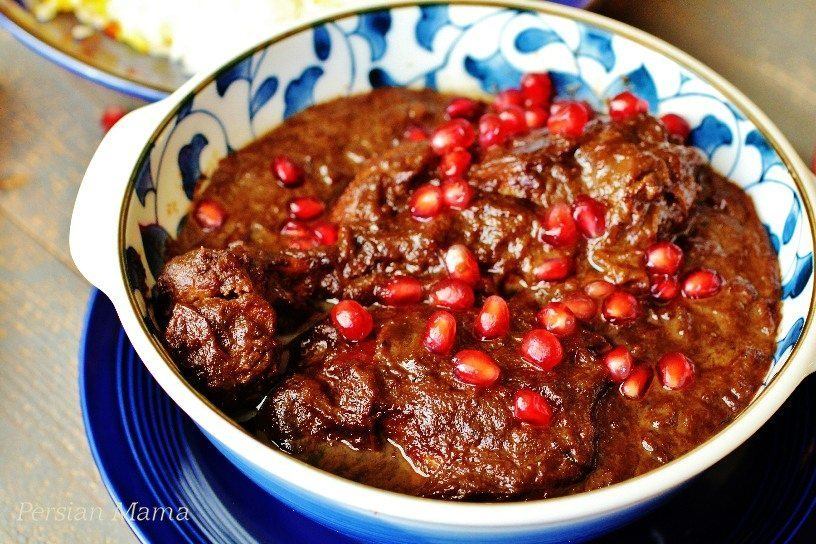

Fesenjan

Fesenjan, also known as Persian pomegranate and walnut stew
Ingredients
- 2 large yellow onion sliced thin
- 5 oz oil
- 2 lbs chicken
- 8 oz walnuts
- 1/4 cup cold water
- 1 cup pomegranate concentrate
- 1/4 tsp salt
- 1/8 tsp black pepper
- May serve with rice
Directions
- Add walnuts to food processor and process until it urns a tan-colored paste.
- Add 1/4 cup cold water to running food processor. Continue until uniform.
- Fry the onions with the oil in a 6-qt pot until golden brown.
- Add chicken to the pot.
- Add walnut paste into the pot along with salt and pepper.
- Drizzle pomegranate concentrate into the pot.
- Bring to boil over medium heat.
- Reduce heat to medium low, cover and simmer for 15 minutes.
- Reduce heat to low and simmer covered for an additional 1 hour 15 minutes or until sauce is thickened. Stir every 15 minutes.
- Optional--Serve over steamed rice